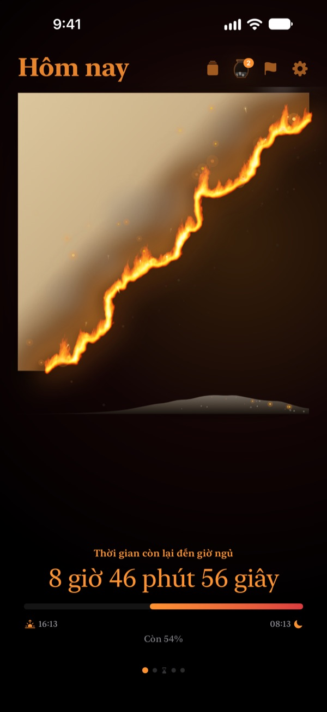
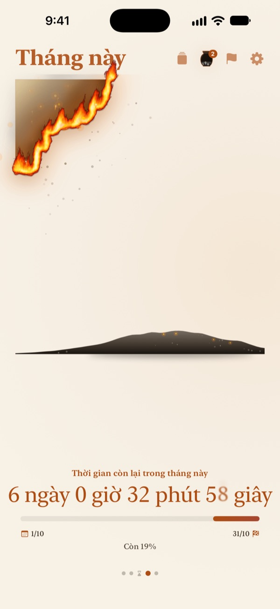
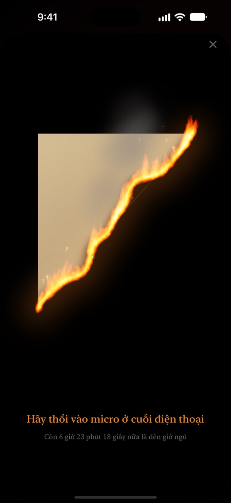
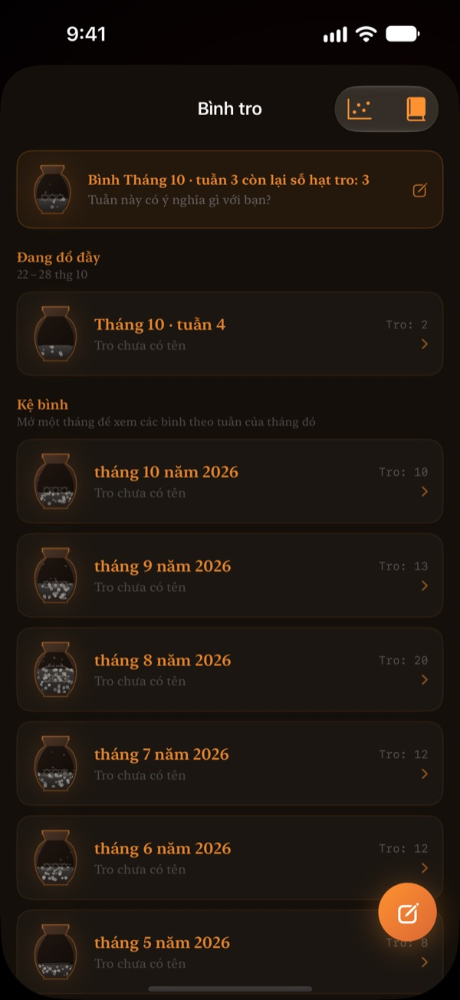

Phần còn lại của hôm nay
đang cháy trước mắt bạn
Một buổi tối trông vô hại khi nhìn bằng con số sẽ khác hẳn khi thành một tờ giấy da đang cháy. Nửa tiếng trước khi ngủ, thổi vào màn hình để dập lửa và khép lại một ngày.
Tờ giấy da cháy, nghi thức thổi tắt lửa và nhìn lại đều miễn phí.

Thử thổi tắt xem
Kéo giờ đến sát giờ ngủ, rồi giữ nút hoặc thổi vào micro.
Bạn từng giật mình "sao đã nửa đêm rồi?"
Ăn tối xong, ngồi nghỉ một chút là hết ngày. Con số trên đồng hồ tối nào trông cũng như nhau, nên bạn không cảm thấy thời gian đang vơi đi. Giấy Da Cháy cho thấy phần còn lại như một tờ giấy da đang cháy, để bạn nhận ra trước khi buổi tối biến mất.
Ngày, tuần và năm đang cháy dần
Từ lúc thức dậy đến giờ đi ngủ, tờ giấy da cháy chậm rãi. Bạn cũng xem được tuần này, tháng này và năm nay còn bao nhiêu theo cùng cách.
Thêm mục tiêu có ngày làm hạn chót, và đồng hồ đếm ngược chạy song song.

Thổi tắt một ngày
Từ 30 phút trước giờ ngủ, thổi vào tờ giấy da đang cháy để dập lửa. Chỉ dùng sức thổi của bạn, không ghi âm gì cả.
Mảnh còn lại được giữ cho bạn. Lật mặt sau và viết một dòng về hôm nay.

Thời gian đã qua lắng lại thành tro
Nhìn lại ngày hôm nay bằng một dòng, rồi đặt nó thành một điểm trên biểu đồ hai trục theo cách bạn đã dùng thời gian đó. Những dòng nhìn lại tích lại trong bình tro theo tuần và tháng, và đọc lại được trong Sổ nhìn lại.
Dòng chảy của tro cho thấy thời gian đã đi đâu bằng biểu đồ phân bố và lịch than hồng.

Bắt đầu trong ba bước
- 1
Đặt giờ thức dậy và đi ngủ
Chạm vào bánh răng ở góc trên bên phải. Tờ giấy da bắt lửa và tắt theo giờ này.
- 2
Chọn khoảng thời gian
Vuốt qua lại giữa ngày, tuần, tháng và năm, hoặc ẩn trang không cần trong Cài đặt.
- 3
Thêm tiện ích
Đặt trên Màn hình chính hoặc Màn hình khóa để thấy thời gian còn lại mà không cần mở ứng dụng.
Xem thời gian còn lại ở đâu
- Ngày
- Từ lúc thức dậy đến giờ đi ngủ
- Tuần · Tháng · Năm
- Tuần này, tháng này và năm nay còn bao nhiêu
- Thời gian rảnh
- Tờ giấy da của tuần chỉ cháy trong những giờ bạn dành cho riêng mình (Pro)
- Hạn chót
- Thời gian còn lại đến ngày của mục tiêu. Miễn phí 1 mục
- Tiện ích Màn hình chính
- Giấy da theo ngày có cỡ nhỏ, vừa và lớn. Tuần, tháng, năm và hạn chót có cỡ nhỏ và vừa
- Tiện ích Màn hình khóa
- Tròn, chữ nhật và một dòng
- Dynamic Island · Hoạt động trực tiếp
- Từ 1 giờ trước khi ngủ hoặc cả ngày. Chọn hoặc tắt trong Cài đặt
Mở rộng Dynamic Island để thấy tờ giấy da đang cháy cùng đồng hồ đếm ngược đầy đủ.
Giấy da miễn phí. Pro giữ được nhiều hơn.
Miễn phí
- Giấy da theo ngày, tuần, tháng và năm
- Thổi tắt lửa và gom các mảnh
- Nhìn lại một dòng, bình tro và Sổ nhìn lại
- Kiểm tra buổi sáng, có thể kết nối dữ liệu ngủ từ Sức khỏe
- Tiện ích Màn hình chính, Màn hình khóa và Dynamic Island
- 1 hạn chót
Giấy Da Cháy Pro
- Chỉ đốt thời gian rảnh của riêng bạn
- Chủ đề: Giấy hanji dưới trăng, Men ngọc, Hoàng hôn
- Ngọn lửa: Lửa đồng, Than hồng, Pháo bông cầm tay
- Chia sẻ các mảnh dưới dạng thẻ và áp phích
- Xuất Sổ nhìn lại thành PDF
- Dòng chảy của tro trong 12 tháng
- Hạn chót không giới hạn
Không phải gói đăng ký. Mua một lần, dùng mãi mãi, gồm cả mọi tính năng Pro ra mắt sau này.
Đổi máy mới? Chạm Khôi phục giao dịch mua trong Cài đặt.
Câu hỏi thường gặp
Tiện ích hiện giờ khác với ứng dụng.
iOS không vẽ lại tiện ích Màn hình chính mỗi giây. Mở ứng dụng là tiện ích khớp lại ngay. Muốn xem đếm ngược từng giây, hãy dùng Dynamic Island và Hoạt động trực tiếp trên Màn hình khóa.
Tôi thổi mà lửa không tắt.
Chỉ thổi tắt được từ 30 phút trước giờ ngủ. Kiểm tra bạn đã cho phép truy cập micro, rồi thổi đều khoảng một giây gần micro ở cạnh dưới iPhone. Một tiếng động ngắn sẽ không đủ.
Giọng tôi có bị ghi âm không?
Không. Ứng dụng chỉ đo sức thổi, không ghi âm hay lưu bất kỳ âm thanh nào.
Khi tôi ngủ, ứng dụng hiện gì?
Sau giờ ngủ, một trái tim rực lửa xuất hiện và cho thấy giấc ngủ đã đi đến đâu cho tới lúc thức dậy. Sáng hôm sau, ứng dụng hỏi tối qua bạn có ngủ đúng giờ không; nếu ngủ muộn, tờ giấy da sáng nay sẽ bị cháy sém tương ứng. Khi kết nối ứng dụng Sức khỏe, nó dùng giờ bạn chìm vào giấc ngủ đã ghi lại mà không cần hỏi.
Khi nào có thông báo?
Một giờ trước giờ ngủ. Nếu không nhận được, hãy kiểm tra Cài đặt > Thông báo > Giấy Da Cháy.
Ứng dụng có tốn pin không?
Đồng hồ đếm ngược trong ứng dụng chạy từng giây, nhưng tiện ích được iOS cập nhật theo cách tiết kiệm điện, nên ảnh hưởng rất nhỏ.
Dữ liệu của tôi được lưu ở đâu?
Giờ thức dậy, giờ ngủ, hạn chót, những dòng nhìn lại và bình tro chỉ lưu trên thiết bị của bạn. Nhà phát triển chỉ nhận thống kê sử dụng ẩn danh, chẩn đoán sự cố và phản hồi bạn tự gửi. Không quảng cáo, không theo dõi.
Pro có phải gói đăng ký không?
Không. Trả một lần, dùng mãi mãi. Trên máy mới, chạm Khôi phục giao dịch mua trong Cài đặt.
Báo lỗi, góp ý tính năng hay câu hỏi khác, hãy gửi về leeo@kakao.com.